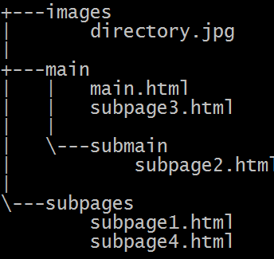
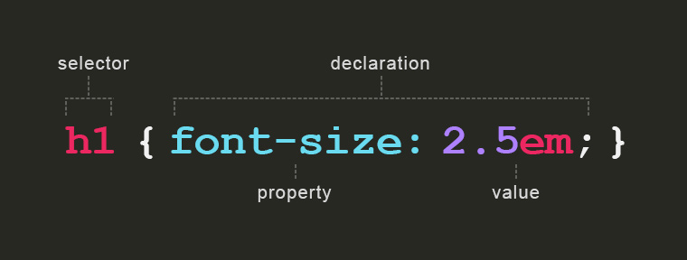
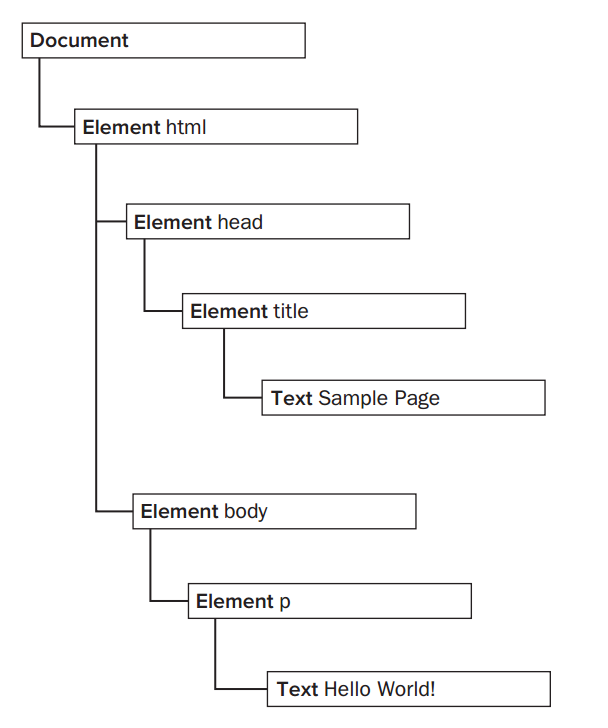

CS3220: Web and Internet Programming
Lecture 3: A Crash Course on HTML/CSS/JavaScript
Michael Hsu
CSULA
Getting the Lecture Slides and Code Examples:
git clone https://github.com/mhsu0020/CSULA-CS3220-Fall2016.git
Getting Subsequent Updates:
git pull
This is not a "Web Design" Class
The basics of HTML/CSS will be covered. Web design is a discipline under Art/Design. However, it doesn't hurt to understand how it works since you will be working with web/UX/UI designers in the industry. As the semester goes on, we will be leveraging several open source UI frameworks that will more or less provide some modern designs for your website.
Here are some good resources to learn web design on your own:
Recall Static Web Diagram from Last Week

Today we'll be focused on the Client side stuff: HTML/CSS/JavaScript
Required Readings
- Introduction to HTML: https://developer.mozilla.org/en-US/docs/Web/Guide/HTML/Introduction
- Introduction to CSS: https://developer.mozilla.org/en-US/docs/Web/Guide/CSS/Getting_Started
- Browse through some of the elements: https://developer.mozilla.org/en-US/docs/Web/HTML/Element
- JavaScript Tutorial: https://developer.mozilla.org/en-US/docs/Web/JavaScript/A_re-introduction_to_JavaScript
Table of Contents (Click to Jump to Section)
What is HTML?
- Shorthand for HyperText Markup Language
- Describes the content and structure of a page
- When you type in an URL in the address bar and press enter, your browser requests a web page from the web server
- The server serves the web page and sends it to the browser
- The browser displays the web page
- How does the the browser know how to display a page? HTML
A Basic HTML Document
<!DOCTYPE html>
<html lang="en">
<head>
<meta charset="utf-8">
<!-- text at top of brower tab -->
<title>CS3220 Rocks!</title>
</head>
<body>
<!-- page content -->
<h1>CS3220 is Awesome!!!</h1>
<p>
This class is lit
</p>
</body>
</html>
Browser Rendered Result

Note that browser didn't render indentations of elements. It makes it more readable for humans
HTML Elements
- Building blocks of a web page
- HTML elements consists of tags
- Elements with content in between usually consists of a opening tag and a closing tag (tags with "/"). They come in pairs.
- Headers (h1, h2, h3), Paragraphs (p), links (a)....
- Content Element = Opening Tag + Content + Closing Tag
- Elements can be nested within each other (see code from previous slide)
- Some elements are void elements, which means they do not have closing tags
- Images (img), line break (br), horizontal line (hr), input (input)...
- Further Reading: W3C docs on element syntax
Basic Elements
- <html> : Also known as the root element, wraps around your entire document
- <head> : provides metadata information about the page
- Common Nested Elements: <title>, <style> (internal CSS), <script> (internal javascript)
- <body> : represents the content of an HTML document
Adding CSS: The <style> Element
<!DOCTYPE html>
<html lang="en">
<head>
<meta charset="utf-8">
<title>CS3220 Rocks!</title>
<style type="text/css">
body {
background-color: #FFC0CB;
}
</style>
</head>
<body>
<h1>CS3220 is Awesome!!!</h1>
<p>
This class is lit
</p>
</body>
</html>
Rendered Result
Above is an example of an <iframe> element, allowing you to embed another HTML page into the current page with a seperate browsing context. (You have very little control of what goes on inside). Notice the CSS did not apply to the rest of the slides.
More CSS
<style type="text/css">
p {
background-color: #FFC0CB;
margin-left: 10%;
margin-right: 10%;
padding: 5px 5px 20px 20px;
border: 5px dotted black;
}
</style>
Rendered Result
More on CSS later
Links (<a>)
<a href="http://www.calstatela.edu">school site</a>
Redendered:
school site- Creates links to other web pages
- Text between tags becomes clickable
- "href" attribute contains destination URL
- "target": specifies where to display the linked resource
<a href="http://www.calstatela.edu" target="_blank">school site</a> - "_blank" value: opens resource in new tab/window. school site external
- Attributes: specifies additional information about an element
- Examples of Attibutes: "href" for <a>, "src" for <img>, "type" for <style>
Relative Paths
- Useful for linking to pages/images/CSS/JavaScript files that are in relative folders
- Compared to absolute paths: absolute paths provide root context. Examples include full url (https://www.google.com) and full file paths (C:/ProgramFiles/Virus.exe)
- In lab1, you use relative paths to link CSS and images in your index.html
- Accessing sub-directory resources in current directory: SUBFOLER_NAME/SUBFOLER_NAME/ ... /RESOURCE
- Accessing resources further up from current directory: ../../ (as many levels as you need )/RESOURCE
- MDN: https://developer.mozilla.org/en-US/docs/Learn/Common_questions/What_is_a_URL#Examples_of_relative_URLs
Relative Path Example
Directory
Clone the lecture repo, navigate to the examples directory under examples in lecture3, and play around with paths
Block vs Inline Elements
Block Elements: occupies the entire space of its parent element (container). - Usually a newline is added before and after the element.
- Examples of block elements:
<p>Each</p><p>paragraph</p><p>occupies entire blocks</p>Each
paragraph
occupies entire blocks
- Examples of inline elements:
This span element is inline so no line breaks and links are also inline<span>This </span><span>span </span><span>element is </span><span>inline so no line breaks </span><a href="#/block-inline">and links are also inline</a>
- Adding arbitrary linebreaks: <br> (Note: no closing tag)
- Further Reading: https://developer.mozilla.org/en-US/docs/Web/HTML/Block-level_elements
block Vs Inline Elements

Lists: Unordered Lists (<ul>)
<ul>
<li>item 1</li>
<li>item 2</li>
<li>item 3</li>
</ul>
Redendered:
- item 1
- item 2
- item 3
- For "bullet point" unordered items
- Each item in the list is wrapper in <li> tags, finally surrounded by a pair of <ul> tags
- Notice the lack of <br> tags even though linebreaks are added. This means that both <ul> and <li> are block elements
Lists: Ordered Lists (<ol>)
<ol>
<li>item 1</li>
<li>item 2</li>
<li>item 3</li>
</ol>
Redendered:
- item 1
- item 2
- item 3
- For "numbered" ordered items
Images(<img>)
<img src="images/meme1.jpg" alt="memes">

- Void element: no closing tag. The required"alt" attribute provides text if image cannot be displayed
- Browser makes seperate request to server for image after page load
- Common image formats: JPEG/JPG(usually smallest file size), PNG, GIF(large file size and slow), SVG...
- Note: even though you might resize the image via CSS, if the source file is large your browser still downloads the entire file. Edit and resize the image in a photo editing tool to actually reduce the image size
CSS: Layout and Styling of Web Pages
- HTML provides the structuring of the page, while CSS (Cascading Style Sheets) provide styling and layout
- Anatomy of CSS: 
CSS: Cascading and Inheritance
/* changes font color of entire body */
body {
color: purple;
}
/* combining multiple selectors with commas */
h1, h2 {
color: red;
}
/*CSS is parsed from top to bottom,
each rules adds on/overrides the previous style*/
h1 {
color: blue;
background-color: green;
}
Rendered Result
The second "h1" rule overrides the "color", and adds the "background-color"
Inheritance: child elements inherit styles of parent. Example: setting the text color ("color") of <body>, <p> inherits text color
CSS: Selectors
- We have already been using element tag names as selectors
- We can also use attribute value as selectors
- The id and class attributes are special for CSS:
<ol id="food-list"> <li id="ham" class="food-item">ham</li> <li class="food-item">pizza</li> <li class="food-item">burrito</li> </ol> - ID Selectors: use "id" attribute to assign ID. the ID name must be unique in the document
Use the hash symbol(#) before the ID in a selector - Class Selectors: use "class" attribute to assign element to named class. Multiple elements in a document can have the same class value
Use the period symbol(.) before the class in a selector
Selectors Example
#food-list {
list-style-type: square;
font-size: xx-large;
}
.food-item {
color: blue;
}
#ham {
color: red;
}
Rendered Result
More Selectors: https://developer.mozilla.org/en-US/docs/Web/Guide/CSS/Getting_Started/Selectors
Linking to External Style Sheets
External style sheets are more maintainable during development
For the labs then on, please use external style sheets as much as possible.
<head>
...
<link type="text/css" rel="stylesheet" href="css/style.css">
...
</head>
Changing the Slide's External Style Sheet

Inline Styling
least maintainable, not recommended
<body>
...
<p style="width:400px; height:200px">
...
</p>
</body>
Resolving CSS Rules
Order of Precedence (Applied In Order):
- Rules that are marked "!important" (sometimes useful, use with caution)
- Inline CSS
- More specific selectors over less specific ones (id selector is more sepecific than class, class selector is more specific than element name, etc)
- Rules that appear later overrides earlier rules if both have same specificity
- The browser's default style. Even if you don't specify any CSS, the web page would like slightly different in different browsers.
Further Reading: W3C documentation
The Box Model
- Elements take up space when displayed
- In the middle, the element occupies space to display content
- Around the element is padding
- Around the padding is border
- Around the border and seperating the element with other elements is margin
Adjusting the margin and padding allows you to adjust positions and create space around elements
|
margin border padding element The light red shows parts of the layout. |
element This is what you see in your browser. |
Basic Layout
- To better control layout, add layout elements to your HTML document
- The <div> tag
<h3>Food</h3> <div id="food-block"> <p>Food 1</p> <p>Food 2t</p> <p>Food 3</p> <p>Food 4</p> <p>Food 5</p> </div>
More on layouts: https://developer.mozilla.org/en-US/docs/Web/Guide/CSS/Getting_Started/Layout
Size Units
- W3C Reference: https://www.w3.org/Style/Examples/007/units.en.html
- Most common units: em, px, and %
- em: relative to the font size of the element applied. Using em for font-size allows your layouts to be scaled with the font-size. You should be using this for styling fonts, and most of your margin/padding needs
- %: relative to the parent element. for example, "width: 80%" applied to an element means 80% of the parent's width
- px: loosely correspond to pixels on screen. It is an absolute unit. px doesn't scale when you resize. Use with discretion
Text Layout
- text-align: Aligns the content. Use one of these values: left, right, center, justify
- text-indent: Indents the content by an amount that you specify.
-
Example:
This text is centered
This text is indented
Floats
- Forces an element to the left or right.
- Rest of document flows around the floated element
- Apply the clear property (left, right, both) to clear an element from floats
Positioning
The position proeprty can have one of the following four values:
- relative: The element's position is shifted relative to its normal position. Use this to shift an element by a specified amount. You can sometimes use the element's margin to achieve the same effect.
- fixed: The element's position is fixed. Specify the element's position relative to the document window. Even if the rest of the document scrolls, the element remains fixed.
- aboslute (use with discretion): Try not to use itThe element's position is fixed relative to a parent element. Only a parent that is itself positioned with relative, fixed or absolute will do. You can make any parent element suitable by specifying position: relative; for it without specifying any shift.
- static: The default value
Debugging/Editing HTML/CSS On the Fly: Using Your Browser's developer console
In this class, we will be using Google Chrome for class demoes/project testing

JavaScript: Introduction
JavaScript !== JAVA
Brief History:
- Started out in NetScape in 1995 as LiveScript
- Added "Java" to the name for "marketing" purposes
- Microsoft created their own version of JavaScript called JScript
- After much frustration, a standard is created: ECMAScript
- In the pre-IE9 era, cross-browser compatibility was a big issue
- Modern browsers more or less implemented most of ECMAScript 5 (newest version is ECMAScript 6)
References
- JavaScript Tutorial: https://developer.mozilla.org/en-US/docs/Web/JavaScript/A_re-introduction_to_JavaScript
- DOM Intro: https://developer.mozilla.org/en-US/docs/Web/API/Document_Object_Model/Introduction
- The Document Type: https://developer.mozilla.org/en-US/docs/Web/API/Document
- DOM Selectors: https://developer.mozilla.org/en-US/docs/Web/API/Document_object_model/Locating_DOM_elements_using_selectors
- DOM Event Handlers: https://developer.mozilla.org/en-US/docs/Web/Guide/Events/Event_handlers
- DOM Events: https://developer.mozilla.org/en-US/docs/Web/Events
- Comparison Operators: https://developer.mozilla.org/en-US/docs/Web/JavaScript/Reference/Operators/Comparison_Operators
- Functions: https://developer.mozilla.org/en-US/docs/Web/JavaScript/Guide/Functions
- Professional JavaScript for Web Developers: https://www.amazon.com/Professional-JavaScript-Developers-Nicholas-Zakas/dp/1118026691
JavaScript: Overview
- Object-oriented dynamic language
- Many syntax similarities to Java/C
- Hooray, you don't have to re-learn everything! But you also need to remember most of your programming skills
- Made of three components: ECMASCript, Document Object Model (DOM), and Browser Object Model (BOM)
ECMAScript
A description of a language implementing the specs. Current version is 6. List of Components:
- Syntax
- Types
- Statements
- Keywords
- Reserved Words
- Operators
- Objects
The Document Object Model (DOM)
- The DOM is an API (Application Programming Interface) that allows manipulation of elements in a web page
- Allows nodes to be added/removed/modified/replaced. We will be using the DOM quite a bit this semester
- The DOM creates a hierarchy of nodes of elements in the page

JavaScript: Embedded and External
Note: In both cases, place the <script> tags right before the </body> tag in your document
Embedded:
<script type="text/javascript">
function showPopup(){
alert("popups are annoying");
}
</script>
External:
<script type="text/javascript" soruce="js/main.js"></script>
JavaScript Language Basics: Variables
Variables are declared using the var keyword:
var myVariable = "hahaha";
//not recommended
myVariable = 2;
//not recommended
myVariable = [1, 2, 3, 4, 5];
//not recommended
myVariable = false;
JavaScript: Variable Scope
Unlike Java, JavaScript is function scoped. Blocks do not have scope.
- if a variable is declared in a if statement, it will be visible to the entire function.
function testExample(num){
for(var i = 0; i < 10; i += 1){
}
/*Actually prints out
i with changed value*/
alert("What is 'i'? " + i);
}
Variable Types
Common Primitive Types:
- Boolean.
trueandfalse. - undefined. A top-level property whose value is undefined. The default value of variables declared but not assigned values yet. Undefined is a type of itself
- Number(floating point).
42or3.14159. - String. "Howdy"
Reference Types:
Object. Functions, Arrays, etc are all Object types
Variables can be intentionally set to null to empty it.
Data Conversion
Number to Strings:
In expressions involving numeric and string values with the + operator, JavaScript converts numeric values to strings.
In statements involving other operators, JavaScript does not convert numeric values to strings.
x = "The answer is " + 42 // "The answer is 42"
y = 42 + " is the answer" // "42 is the answer"
"37" - 7 // 30
"37" + 7 // "377"
String to Numbers: use parseInt() or parseFloat
JavaScript Comparisons
Two types of comparisons:
- Strict Comparison (preferred):
===
Only True if both type and content match - Type-Converting Comparison (less strict):
==
Converts the operands to the same type before making the comparison. - Use strict comparison whenever possible to avoid confusion
JavaScript: Objects
- A collection of name-value pairs
- Similar to HashMap in Java/Dictionaries in Python
- Two ways to create an object:
- Using the new operator (don't use this)
var obj = new Object(); - Using object literal syntax (use this always)
var obj = {}; - Object literal syntax is very similar to JSON format, something we will be using all the time
JavaScript Objects: Accessing Attributes
Given the following Objcet:
var pizza = {
name: "MyPizza",
toppings: [{name: "greenPepper", price: 40}, {name: "cheese", price: 20}]
};
- Accessing using dot notation (ObjectVariable.propertyName)
var pizzaName = pizza.name; - Accessing using array notation (Useful if you're storing the property name in a variable)
var nameProperty = "name"; var pizzaName = pizza[nameProperty]; - Chaining them together:
var firstToppingName = pizza.toppings[0]["name"]; - You can dynamically assign/overwrite properties as you wish using the same notation
JavaScript Arrays
var toppings = ["greenPepper", "cheese", "salami"];
toppings.length; //3
toppings[100] = "spam";
toppings.length; //101
Array Operations
Looping through arrays:
var toppings = ["greenPepper", "cheese", "salami"];
toppings.forEach(function(currentTopping, index)){
console.log(currentTopping);
}
| Method name | Description |
|---|---|
a.toString() |
Returns a string with the toString() of each element separated by commas. |
a.concat(item1[, item2[, ...[, itemN]]]) |
Returns a new array with the items added on to it. |
a.join(sep) |
Converts the array to a string — with values delimited by the sep param |
a.pop() |
Removes and returns the last item. |
a.push(item1, ..., itemN) |
Adds one or more items to the end. |
a.reverse() |
Reverses the array. |
a.shift() |
Removes and returns the first item. |
a.slice(start[, end]) |
Returns a sub-array. |
a.sort([cmpfn]) |
Takes an optional comparison function. |
a.splice(start, delcount[, item1[, ...[, itemN]]]) |
Lets you modify an array by deleting a section and replacing it with more items. |
a.unshift(item1[, item2[, ...[, itemN]]]) |
Prepends items to the start of the array. |
Functions
Functions are first class citizens in JavaScript: They are objects, and can be stored in variables and passed around
function add(x, y){
var total = x + y;
return total;
}
//Function Expressions
var add2 = function(x, y){
var total = x + y;
return total;
}
var addThenMutiply = function(addFunction, x, y, z){
var total = addFunction(x, y);
return total * z;
}
add(1, 2); //3
addThenMultiply(add2, 1, 2, 3); //9
JavaScript functions are pass by value, just like Java. You can not modify primitive types or re-assign objects, but you can modify object properties.
function reassignPrimitive(num){
num = 2;
}
function reassignCarObject(car){
car = {make: "Ferrari"};
}
function modifyCarObject(car){
car.make = "Ferrari";
}
var number = 1;
var camry = {make: "Toyota"};
reassignPrimitive(number); //number is still 1, a copy of the value of number is passed in
reassignCarObject(camry); //camry.make is still "Toyota", a copy of the reference is passed in
modifyCarObject(camry); //camry.make is now "Ferrari"
Function Scope
- JavaScript is function scoped, not block scoped.
- Variables defined inside a function cannot be accessed from anywhere outside the function
- However, a function can access all variables and functions defined inside the scope in which it is defined
- A function defined in the global scope can access all variables defined in the global scope
- A function defined inside another function can also access all variables defined in its parent function and any other variable to which the parent function has access
Function Scope: Example
//Global Scope Variables
var num1 = 20,
num2 = 3,
name = "Chamahk";
// This function is defined in the global scope
function multiply() {
return num1 * num2;
}
multiply(); // Returns 60
// A nested function example
function getScore () {
var num1 = 2,
num2 = 3;
function add() {
return name + " scored " + (num1 + num2);
}
return add();
}
getScore(); // Returns "Chamahk scored 5"
The Document Object Model (DOM)
- The DOM provides a representation of the document as a structured group of nodes and objects that have properties and methods.
- Essentially, it connects web pages to scripts or programming languages.
- Represented as a hierarchy of nodes 
Node Types
There are 12 Node Types, most notabally:
Document: The root Node type. The Nodedocumentprovides many useful functions, such asdocument.getElementById()Element: Most common Node Type. For example in the previous slide image, the html, head, title, body, and p elements are all Node elementsText: represents data literals (the "text" between the tags)
Getting tag name of Node: someNode.nodeName
Node Relationships
- Expressed in terms of "tradiional family relationships": parent/child/sibiling
- Each node has a
childNodesproperty containing aNodeList. - A
NodeListis an array-like object used to store an ordered list of nodes that are accessible by position, similar to Arrays.
var firstChild = someNode.childNodes[0];
var secondChild = someNode.childNodes.item(1);
var count = someNode.childNodes.length;

Node Manipulation
- Adding Nodes:
appendChild(): adds to end - Replacing/Removing Nodes:
replaceChild(),removeChild() - Creating copies of Nodes: deep copy
cloneNode(true)vs shallow copycloneNode(false) - Only copies attributes and/or child nodes, not event handlers
The Document Type
Useful Methods:
Getting element by ID: document.getElementById()
<div id="myDiv">Some Div</div>
.....
var div = document.getElementById("myDiv");
Getting elements by tag name: document.getElementsByTagName(). This returns a NodeList
Useful HTMLElement Attributes
HTMLElementinherits fromNodewith some special propertiesid— A unique identifi er for the element in the document.className— The equivalent of the class attribute, which is used to specify CSS classes on an element
<div id="myDiv" class="ugly-color-theme" myAttribute="stuff" >Some Div</div>
.....
var div = document.getElementById("myDiv");
div.id = "someOtherId";
div.className = "cool-color-theme";
var customProp = div.getAttribute("myAttribute");
div.setAttribute("myAttribute", "no more stuff");
Creating Elements
The document.createElement() function
//Doesn't actually add it to Document yet
var div = document.createElement("div");
div.id = "myNewDiv";
div.className = "box";
document.body.appendChild(div);
Directly Inserting Markup: innerHTML
Selectors API
Using CSS selectors, you can find elements on the page
//get the body element
var body = document.querySelector("body");
//get the element with the ID "myDiv"
var myDiv = document.querySelector("#myDiv");
//get first element with a class of "selected"
var selected = document.querySelector(".selected");
//get first image with class of "button"
var img = document.body.querySelector("img.button");
//get all em elements in a div (similar to getElementsByTagName("em"))
var ems = document.getElementById("myDiv").querySelectorAll("em");
//get all elements with class of "selected"
var selecteds = document.querySelectorAll(".selected");
//get all strong elements inside of p elements
var strongs = document.querySelectorAll("p strong");
Event Handling
- Browser Wars: IE vs NetScape
- Event Bubbling: event fired at element interacted, then "bubble up"
- Event Capturing: event fired at top level document, then gradually down to be "captured"
- Current DOM spec: Capturing -> target recieves event -> Bubbling

HTML Event Handlers
- Similar to JavaFX: user action triggers events, you can create and register functions to handle specific events
- Many, many, different event types: https://developer.mozilla.org/en-US/docs/Web/Events
var button = document.getElementById("myBtn");
var alertIdFunction = function(){
alert(this.id);
};
var alertHaFunction = function(){
alert("hahah");
};
button.addEventListener("click", alertIdFunction, false);
//Second click function, both will be fired when button is clicked
button.addEventListener("click",alertHaFunction, false);
btn.removeEventListener(“click”, alertIdFunction, false);